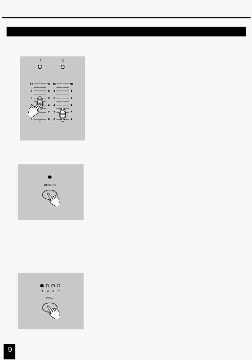

2. Опис інструкцій
2.1.3 Програмування Сцен
3. Створіть сцену, використовуючи повзунків
каналів (Channel Sliders) 1-48. В 0% або DMX 0,
ці повзунки будуть у положенні 0, і в 100% або
DMX 255, ці повзунки будуть у положенні 10.
4. Як тільки сцена є задовільною, натисніть кнопку
Record, щоб програмувати сцену як крок в
память.
5.
Повторіть крок 3 і крок 4 доти поки всі необхідні
сцени не будуть запрограмовані в пам'яті.
Ви можете запрограмувати до 1000 кроків у пам'яті.
6.
Виберіть банк послідовності або повзунок майстра
сцени для збереження Вашої програми. Натисніть
кнопку Page для вибору номера сторінки (Page 1-4) у
якій буде збережені Ваші сцени.